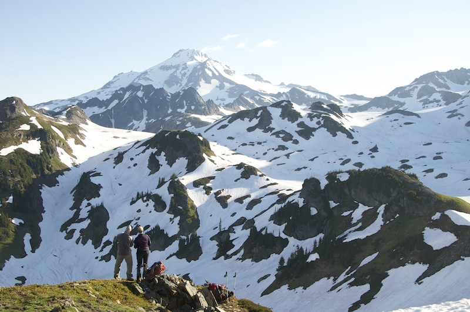
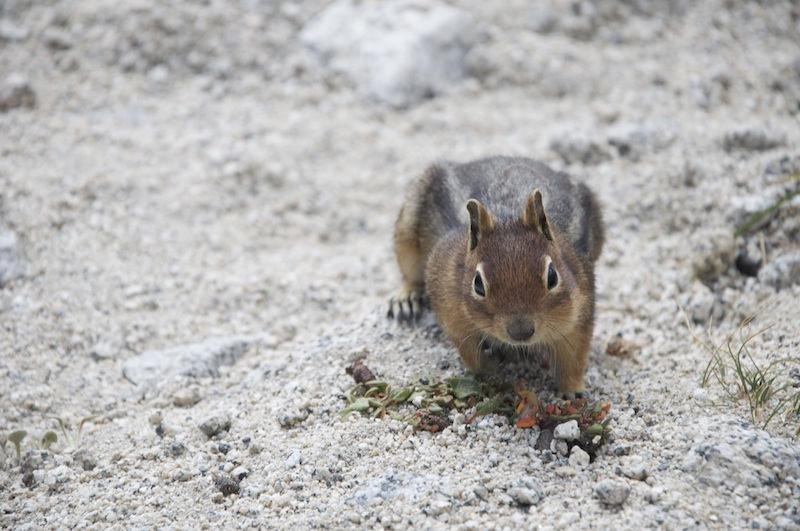
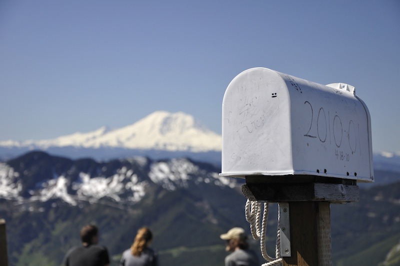
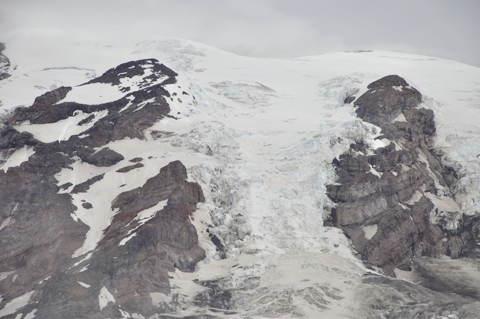
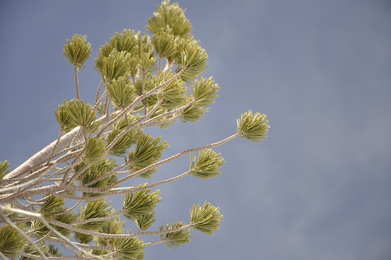
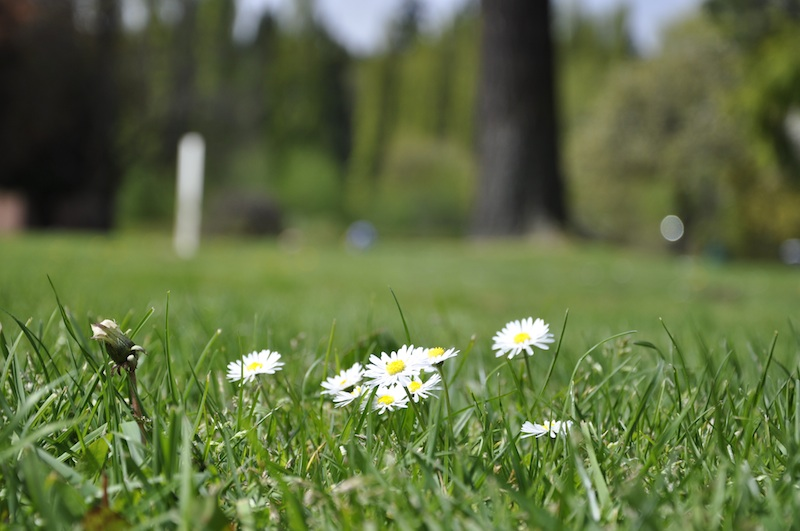

My current camera is a Nikon D90, although it is a bit dated now, it has more modes and functions than I can ever hope to master. I generally enjoy photographing scenes around the Cascade Mountain range in Washington State where I live. One day I'll get around to putting more pictures online but I want to build my own photography website before I do that (I'm a software engineer, I can't help myself). Below are just a few of my favourite photos.
PLANNING THE ROUTE (2013)
A couple planning their route to the summit of Glacier Peak, WA
WAITING FOR A TREAT (2011)
A chipmunk hoping to get a treat, Enchantments, WA
GRANITE HOPPING (2011)
An experiment in motion photography on Granite Mountain, WA
THE MAIL MAN COMETH (2011)
An actual mailbox on top of Mailbox Peak, WA
FLOWING ICE (2011)
Nisqually Glacier, Mount Rainier, WA
SKY TREE (2011)
A beautiful pine tree, Esmeralda Basin, WA
BUGS EYE VIEW (2010)
Marymoor Park, WA
